Теорія 1
Теорія 1
▶
Бібліотека turtle
Уяви, що в тебе на екрані живе маленька віртуальна черепашка. Вона вміє розуміти твої команди і залишати за собою слід — малювати лінії, коли рухається.
Бібліотека turtle (з англійської — «черепаха») у Python — це цікавий спосіб вивчати основи програмування, створюючи власні малюнки та навіть прості анімації.
import turtle
Щоб наша програма зрозуміла команди для керування черепашкою, на початку програми потрібно підключити її бібліотеку: import turtle.
Ще одна важлива команда — turtle.done(). Її ми пишемо в самому кінці програми. Вона потрібна для того, щоб вікно з нашим малюнком залишалося відкритим, поки ми самі його не закриємо. Хоча в деяких програмах (наприклад, в Thonny) все може працювати і без неї, краще одразу взяти за звичку завжди додавати цей рядок.
import turtle
# Тут будуть наші команди для малювання...
turtle.done()Після запуску цієї програми, має відкритися нове вікно. Це наше полотно для малювання, і поки що воно порожнє:
Рух вперед та назад
Тепер навчимо черепашку рухатися! Хоча можна й просто писати turtle.назва_команди(), хорошою практикою в програмуванні є створення для нашої черепашки окремої змінної. Назвемо її, наприклад, bob (ти можеш обрати будь-яку свою назву). Для цього ми пишемо: bob = turtle.Turtle(). Після створення такої змінної, на раніше порожньому полотні, рівно по центру, має зʼявитися стрілка. Це і є наш Боб, яким ми будемо малювати.
bob = turtle.Turtle()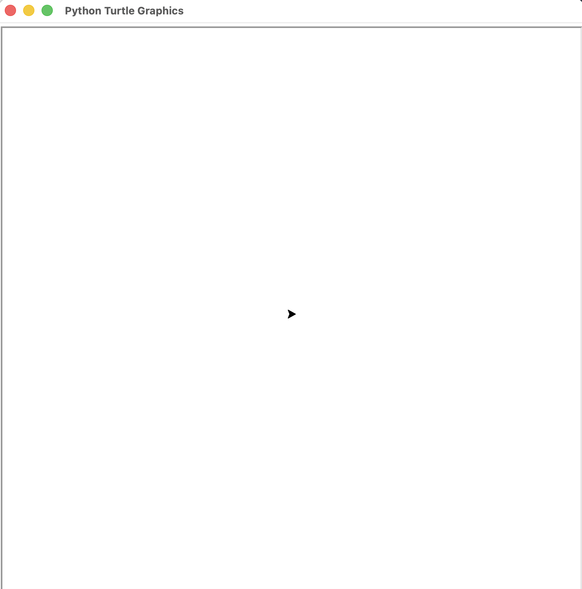
Щоб Боб рухався вперед, використовуємо команду forward(), а для руху назад — backward(). У дужках вказуємо кількість пікселів — це відстань, яку пройде черепашка.
bob.forward(150) # Боб малює лінію вперед на 150 пікселів
bob.backward(50) # Боб повертається назад по тій самій лінії на 50 пікселів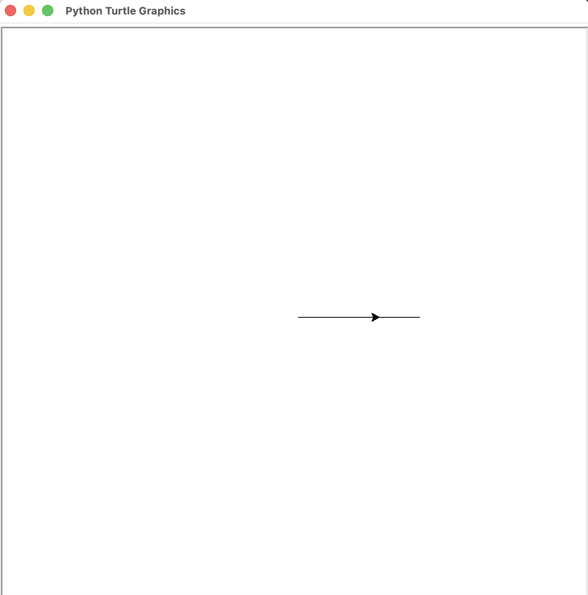
Повороти
Рухатися по прямій — це добре, але як малювати фігури без поворотів? Тому існують команди left() (поворот ліворуч, проти годинникової стрілки) та right() (поворот праворуч, за годинниковою стрілкою). В дужках вказуємо кут повороту в градусах (від 0 до 360).
Зверни увагу: ми вказуємо кут, на який черепашка має відхилитися від свого поточного напрямку руху (тобто, це зовнішній кут повороту, а не внутрішній кут фігури, яку малюємо).
bob.forward(100) # Рух вперед на 100 пікселів
bob.left(90) # Повертаємо ліворуч на 90 градусів
bob.forward(100) # Знову рух вперед, але вже в напрямку вгору
bob.right(45) # Повертаємо праворуч на 45 градусів
bob.forward(100) # Рух вгору по діагоналі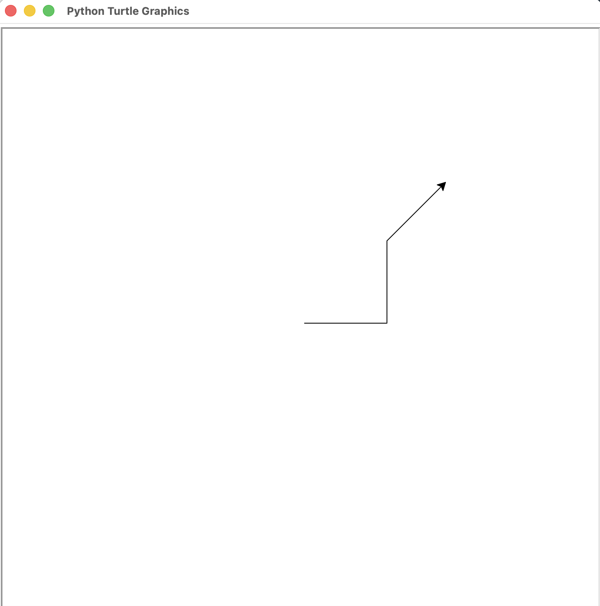
Малювання фігур
Тепер об'єднаємо все вивчене, щоб намалювати квадрат. Квадрат має 4 рівні сторони та 4 кути по 90 градусів:
import turtle
bob = turtle.Turtle()
# Малюємо квадрат зі стороною 100 пікселів
bob.forward(100)
bob.left(90)
bob.forward(100)
bob.left(90)
bob.forward(100)
bob.left(90)
bob.forward(100)
bob.left(90)
turtle.done()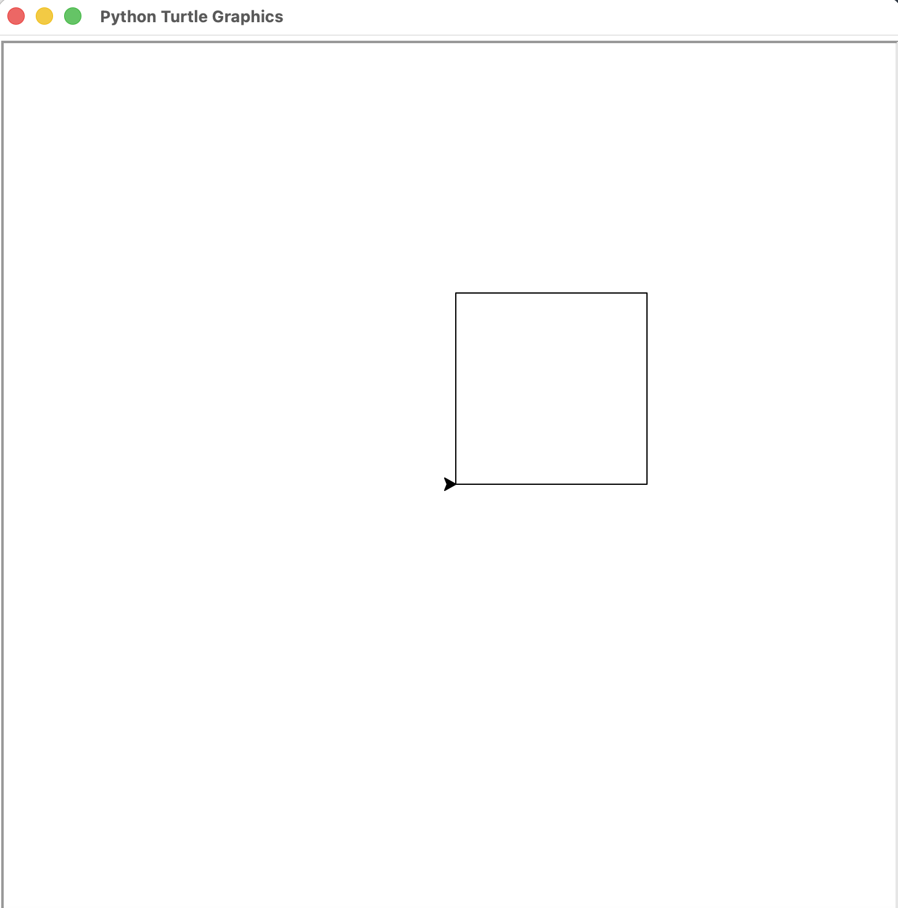
Цей код працює, але, якщо ми захочемо змінити розмір квадрата зі 100 на 155 пікселів, доведеться вручну змінювати числа аж у чотирьох місцях в коді. Це забирає час. До того ж, такі числа, які виринають в коді без пояснень, що вони означають, програмісти називають «магічними» — їх краще уникати, адже вони роблять код заплутаним і збільшують ризик помилок.
Щоб зробити програму зручнішою, створимо змінну side (з англійської — «сторона») і збережемо в ній число 155. Далі просто вкажемо назву цієї змінної в дужках команди forward(). Тепер, щоб змінити розмір фігури, достатньо оновити число лише в одному рядку!
import turtle
bob = turtle.Turtle()
side = 155 # Створюємо змінну для довжини сторони
bob.forward(side)
bob.left(90)
bob.forward(side)
bob.left(90)
bob.forward(side)
bob.left(90)
bob.forward(side)
bob.left(90)
turtle.done()Питання для самоперевірки
Перевір свої знання
Питання 1: Де в програмі має знаходитися рядок import turtle і чому?
Відповідь
Цей рядок обов'язково пишеться на самому початку (у першому рядку). Це потрібно для того, щоб Python заздалегідь завантажив бібліотеку і знав усі команди для черепашки ще до того, як ми почнемо їх використовувати.
Питання 2: Зараз черепашка дивиться вправо. Яку команду і з яким значенням в дужках треба написати, щоб вона розвернулася в протилежний бік?
Відповідь
Для розвороту треба використати команду left(180) або right(180).
 Практика 1
Практика 1
▶
Завдання
Завдання 1.1: Прямокутник
Намалюй прямокутник. Розміри прямокутника мають бути збережені у змінних (width, height).
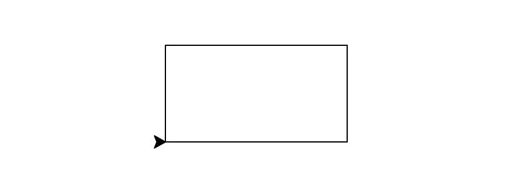
Завдання 1.2: Ромб
Намалюй ромб. Його кути не мають усі бути рівними.
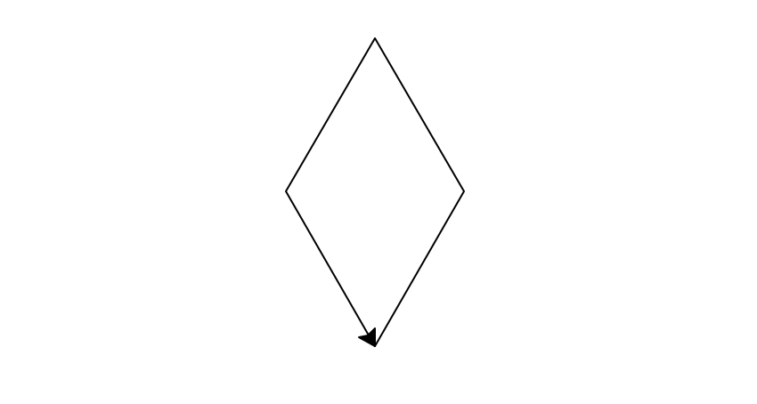
Завдання 1.3: Рівносторонній трикутник
Намалюй трикутник, у якого всі сторони рівні. Розмір сторони має бути збережений у змінній (side).
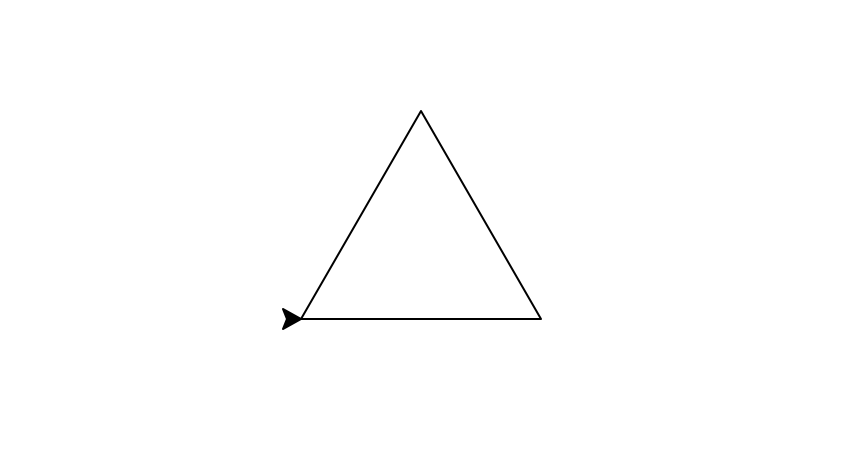
Теорія 2
▶
Колір та товщина ліній
За замовчуванням черепашка малює чорною лінією, товщиною в 1 піксель. Але ми можемо зробити наші малюнки яскравішими! Для цього є дві команди:
- pensize() - змінює товщину лінії. В дужках пишемо число (кількість пікселів).
- pencolor() - змінює колір лінії. В дужках англійською пишемо назву кольору, обовʼязково в лапках.
bob.pensize(3)
side = 100
bob.pencolor("red")
bob.forward(side)
bob.left(90)
bob.pencolor("blue")
bob.forward(side)
bob.left(90)
bob.pencolor("green")
bob.forward(side)
bob.left(90)
bob.pencolor("orange")
bob.forward(side)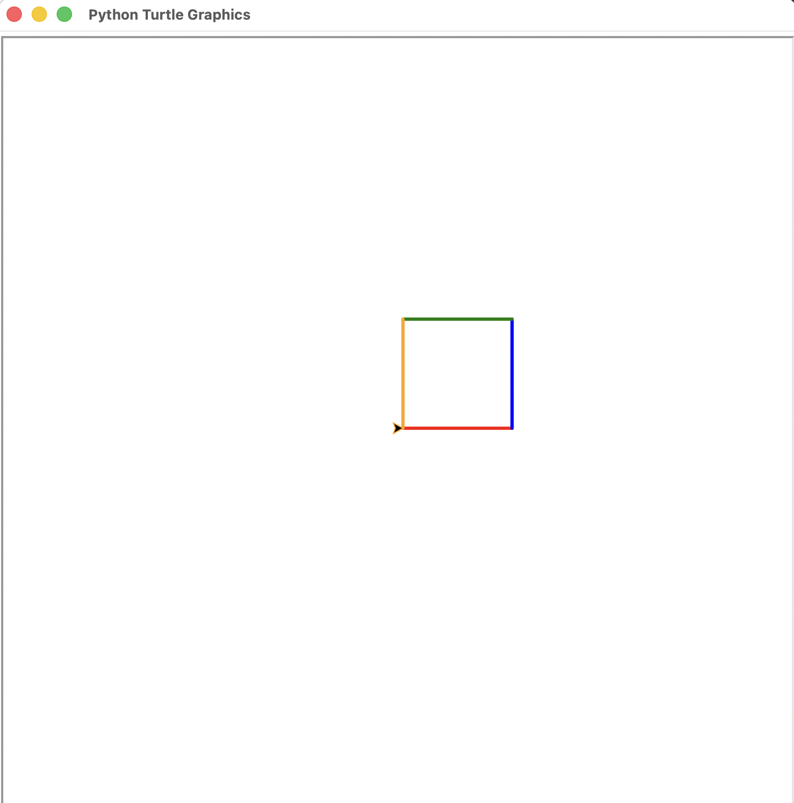
Головне правило: спочатку візьми потрібну ручку, а потім малюй. Щойно ти зміниш колір чи товщину лінії, черепашка буде малювати саме в такому стилі, поки ти не даси їй іншу команду.
Кольорів, які знає Python, є багато. Переглянути їх можна на цьому сайті.
Рух без малювання (спосіб 1)
Іноді нам потрібно перемістити черепашку в інше місце на екрані, але так, щоб вона не залишала за собою слід. Уяви, що ти відриваєш ручку від паперу, переносиш руку, і знову ставиш на папір. У Python для цього є команди:
- penup() - підняти ручку (черепашка рухається, але не малює).
- pendown() - опустити ручку (черепашка знову малює).
Давай намалюємо два квадрати поруч, використовуючи ці команди:
bob.pencolor("seagreen")
bob.pensize(4)
side = 120
# Малюємо перший квадрат
bob.forward(side)
bob.left(90)
bob.forward(side)
bob.left(90)
bob.forward(side)
bob.left(90)
bob.forward(side)
bob.left(90)
bob.penup() # Піднімаємо ручку
bob.forward(150) # Проходимо 150 пікселів вперед
bob.pendown() # Опускаємо ручку, щоб знову малювати
# Малюємо другий квадрат
bob.forward(side)
bob.left(90)
bob.forward(side)
bob.left(90)
bob.forward(side)
bob.left(90)
bob.forward(side)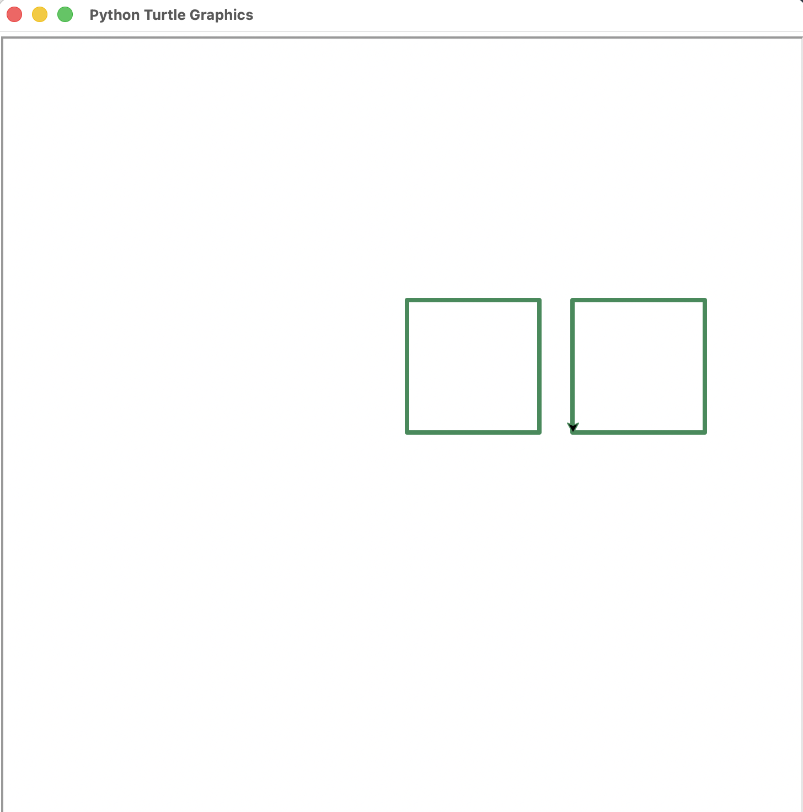
Рух без малювання (спосіб 2)
Вираховувати відстань командами forward() та поворотами не завжди зручно. Екран черепашки — це координатна площина. Центр екрана — це точка з координатами (0, 0).
- Вісь X відповідає за рух вліво/вправо (праворуч від нуля числа додатні, ліворуч — від'ємні).
- Вісь Y відповідає за рух вгору/вниз (вгору числа додатні, вниз — від'ємні).
Ми можемо миттєво телепортувати черепашку в будь-яку точку за допомогою команди goto(x, y). Наприклад, goto(100, 50) перемістить Боба на 100 пікселів вправо і на 50 вгору від центру екрана.
Намалюємо два квадрати в різних кутках полотна:
bob.pensize(5)
side = 200
# Телепортуємося у верхній лівий кут для першого квадрата
bob.penup()
bob.goto(-300, 300) # X від'ємне (вліво), Y додатнє (вгору)
bob.pendown()
# Малюємо перший квадрат
bob.pencolor("violet")
bob.forward(side)
bob.right(90)
bob.forward(side)
bob.right(90)
bob.forward(side)
bob.right(90)
bob.forward(side)
# Телепортуємося у нижній правий кут для другого квадрата
bob.penup()
bob.goto(300, -300) # X додатнє (вправо), Y від'ємне (вниз)
bob.pendown()
# Малюємо другий квадрат
bob.pencolor("turquoise")
bob.forward(side)
bob.left(90)
bob.forward(side)
bob.left(90)
bob.forward(side)
bob.left(90)
bob.forward(side)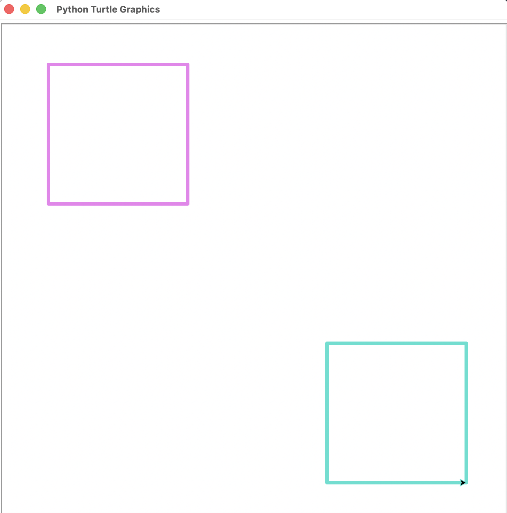
Колір фону (Заливка)
Фігури можуть бути не лише з кольоровими контурами, а й повністю зафарбованими всередині. Для цього потрібні три кроки:
- fillcolor("колір") — обираємо колір заливки.
- begin_fill() - кажемо черепашці: "Зараз я почну малювати фігуру, яку треба зафарбувати". Цю команду пишемо перед малюванням фігури.
- end_fill() — кажемо черепашці: "Фігура готова, розфарбовуй!". Пишемо одразу після того, як фігура замкнулася.
bob.pensize(5)
bob.pencolor("slateblue")
bob.fillcolor("palegreen")
side = 220
bob.begin_fill()
bob.forward(side)
bob.right(90)
bob.forward(side)
bob.right(90)
bob.forward(side)
bob.right(90)
bob.forward(side)
bob.end_fill()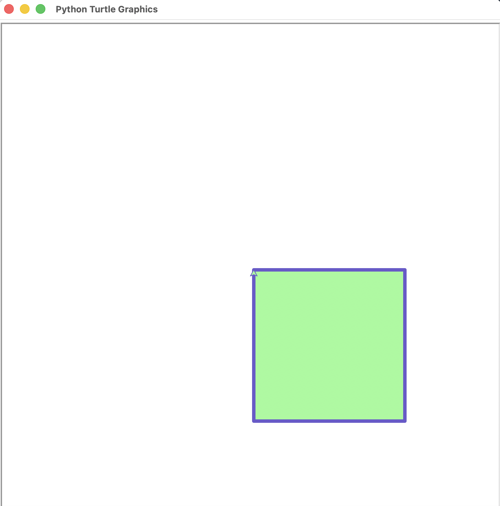
Питання для самоперевірки
Перевір свої знання
Питання 1: Що станеться, якщо у команді pencolor забути написати лапки навколо кольору, наприклад pencolor(red)?
Відповідь
Програма видасть помилку. Без лапок Python подумає, що red — це змінна, яку ми десь створили раніше, і не зрозуміє, що це назва кольору.
Питання 2: Чому перед використанням команди goto() найчастіше пишуть penup()?
Відповідь
Якщо ручка опущена (pendown), то під час миттєвого переміщення в точку goto() черепашка прокреслить лінію через весь екран. Щоб переміщення було "невидимим", ручку треба спочатку підняти.
Питання 3: В якому місці коду потрібно писати команди begin_fill() та end_fill() ?
Відповідь
Команду begin_fill() ставимо безпосередньо перед першою лінією фігури, яку хочемо зафарбувати. А команду end_fill() — одразу після того, як намалювали останню лінію, яка замкнула цю фігуру.
Практика 2
▶
Завдання
Завдання 2.1: Прапор
Намалюй два прямокутники один над одним: верхній синього кольору, нижній - жовтого.
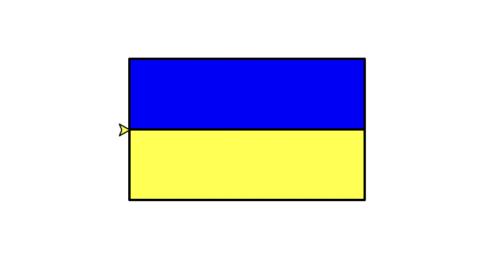
Завдання 2.2: Шахівниця
Намалюй великий квадрат, який складається з 4 менших квадратиків (2 чорних, 2 білих, розташованих у шаховому порядку).
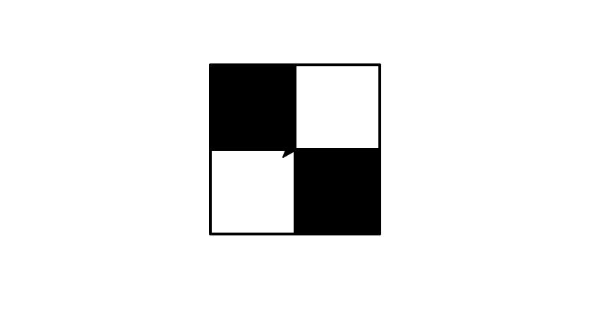
Завдання 2.3: Будинок
Намалювати будинок, де стіни — це квадрат, а дах — трикутник, із заливкою різними кольорами.
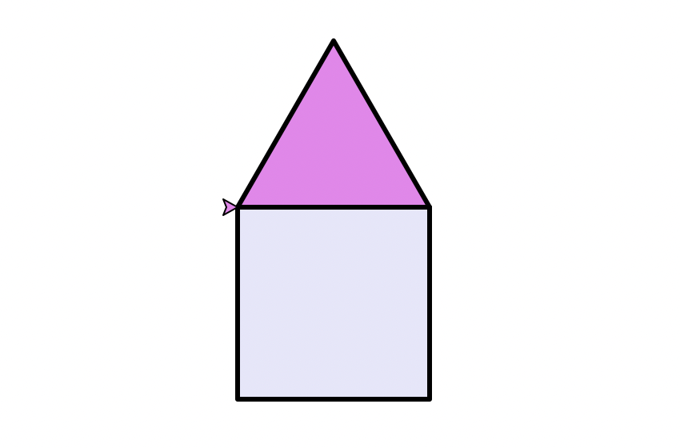
Теорія 3
▶
Цикли
Уяви, що тобі потрібно намалювати фігуру з 20 сторін. Писати команди forward() та left() 20 разів підряд — це дуже довго і нудно.
У програмуванні є золоте правило: комп'ютер має працювати замість тебе . Щоб не копіювати однакові рядки коду багато разів, програмісти використовують цикли. Цикл — це спеціальна команда, яка змушує комп'ютер повторювати певну дію потрібну кількість разів.
Існує кілька видів циклів, але сьогодні ми познайомимося з найпопулярнішим із них — циклом for.
Цикл for
З англійської слово "for" перекладається як "для", а "range" — як "діапазон". Тому рядок for i in range(4): можна прочитати так: "для кожного кроку в діапазоні з 4 повторень зроби наступне".
Сьогодні ми лише знайомимось з циклами. Все, що тобі потрібно запам'ятати зараз: команда for i in range(n): каже комп'ютеру повторити дію рівно n разів.
Давай подивимося, як сильно цикл спрощує малювання квадрата:
side = 100
# Кажемо комп'ютеру повторити команди 4 рази
for i in range(4):
bob.forward(side)
bob.left(90)Зверни увагу на порожні місця (пробіли) перед командами bob.forward() та bob.left(). Їх можна швидко поставити клавішею Tab на клавіатурі. Саме завдяки цим відступам Python розуміє, які саме команди "знаходяться всередині циклу" і їх треба повторювати.
turtle + input()
А тепер давай згадаємо те, що ми вчили на першому уроці! Функція input() дозволяє нашій програмі спілкуватися з користувачем — ставити йому запитання і чекати на відповідь з клавіатури.
Пам'ятай: input() завжди повертає текст (тип str). Тому, якщо ми питаємо користувача про розмір квадрата (тобто просимо ввести число), обов'язково треба перетворити його відповідь на число за допомогою int() (для цілих чисел) або float() (для дробів).
Давай напишемо програму, яка спочатку питає в користувача, якого розміру і кольору квадрат він хоче, а потім малює його:
# 1. Спілкуємося з користувачем
# Перетворюємо введену відстань на ціле число
user_size = int(input("Введіть розмір квадрата (в пікселях): "))
# Колір залишаємо як текст
user_color = input("Введіть колір англійською (наприклад, red, green, blue): ")
# 2. Починаємо малювати
bob.pensize(3)
bob.pencolor(user_color) # Застосовуємо колір від користувача
# 3. Використовуємо цикл для квадрата
for i in range(4):
bob.forward(user_size) # Застосовуємо розмір від користувача
bob.left(90)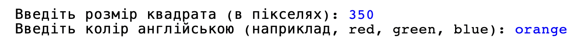
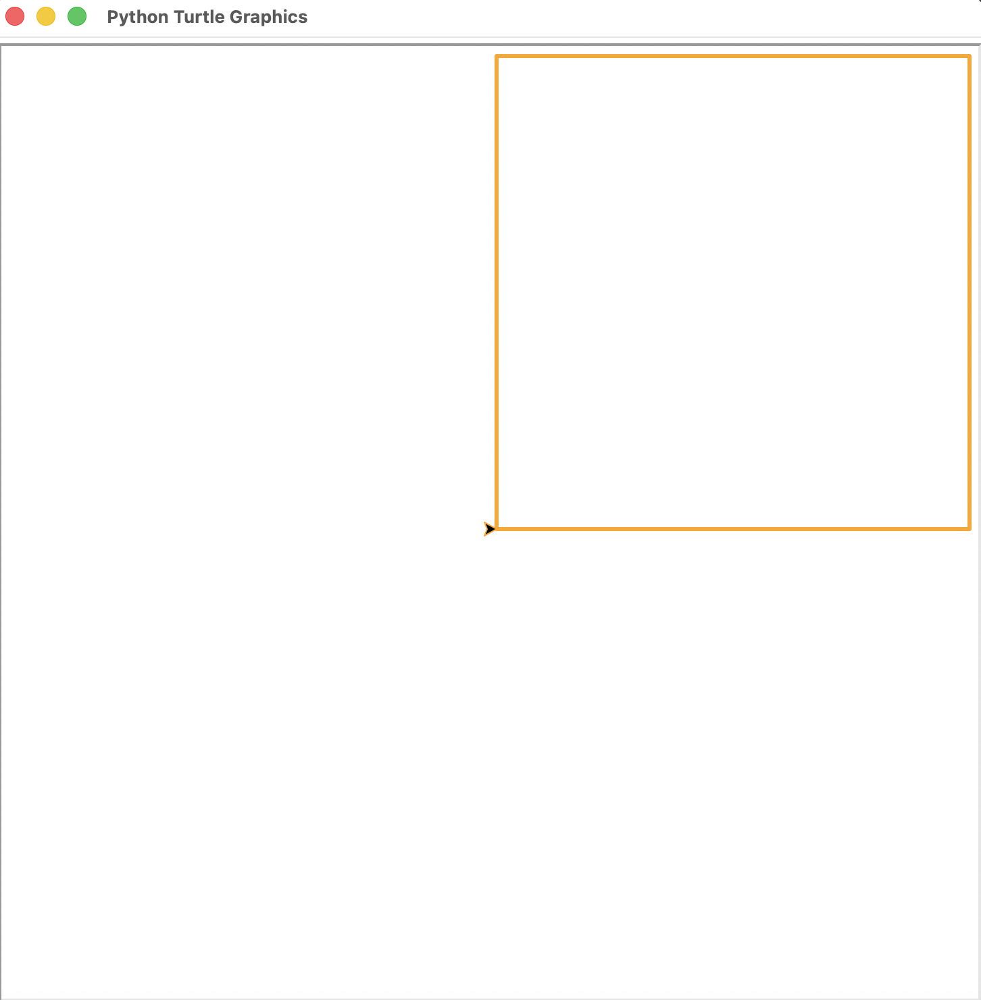
Питання для самоперевірки
Перевір свої знання
Питання 1: Як комп'ютер розуміє, які саме команди належать до циклу і їх треба повторювати, а які — ні?
Відповідь
За допомогою відступів (пробілів або табуляції). Усі команди, які зсунуті вправо під рядком for ... :, знаходяться "всередині" циклу і будуть повторюватися. Код, який написаний без відступів з лівого краю, до циклу не входить.
Питання 2: Що робить рядок for i in range(10): ?
Відповідь
Він дає вказівку комп'ютеру повторити команди, які знаходяться всередині циклу (з відступом), рівно 10 разів.
Практика 3
▶
Завдання
Завдання 3.1: Трикутник
Знову намалюй рівносторонній трикутник, але використай цикл for і додай заливку.
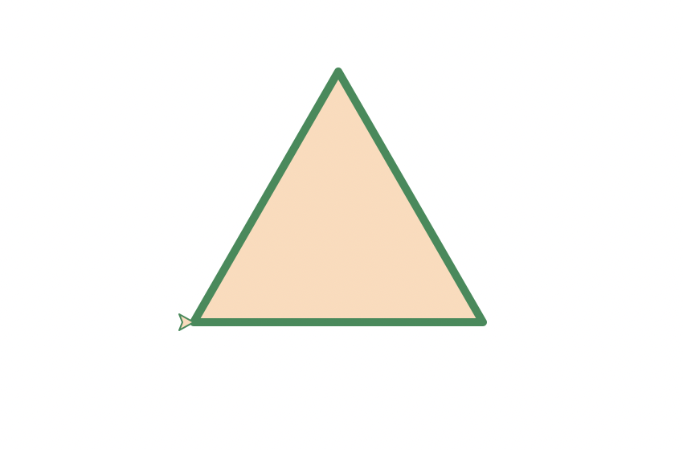
Завдання 3.2: Багатокутник
Напиши програму, яка:
- Запитує у користувача кількість сторін (n) багатокутника і довжину сторони (length).
- Обчислює потрібний кут повороту черепашки (angle).
- Малює правильний багатокутник циклом for.
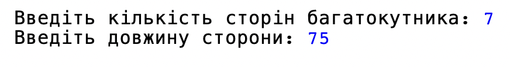
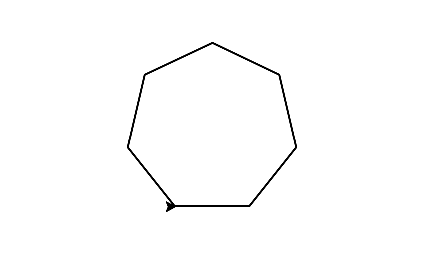
Завдання 3.3: Зірка
Цей код малює пʼятикутну зірку:
for i in range(5):
bob.forward(200)
bob.right(144)- Поекспериментуй із цифрами в дужках, щоб вийшла зірка з більшою кількістю кутів.
- Зміни колір та товщину ліній і додай заливку на свій смак.
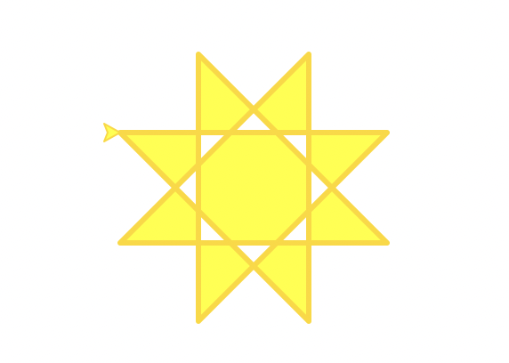
 Повторення
Повторення
▶
Таблиця
| Поняття | Означення | Приклад коду |
|---|---|---|
| import turtle | Підключає бібліотеку інструментів для графіки та малювання. |
|
| turtle.Turtle() | Створює новий об'єкт черепашки (нашого персонажа) для керування. |
|
| forward(n) | Переміщує черепашку вперед на n пікселів. |
|
| backward(n) | Переміщує черепашку назад на n пікселів. |
|
| left(α) | Повертає черепашку ліворуч на вказаний кут у градусах. |
|
| right(α) | Повертає черепашку праворуч на вказаний кут у градусах. |
|
| pensize(w) | Встановлює товщину лінії малювання у w пікселів. |
|
| pencolor("color") | Змінює колір лінії (назву кольору пишемо англійською в лапках). |
|
| penup() | Піднімає ручку (черепашка рухається площиною, не залишаючи сліду). |
|
| pendown() | Опускає ручку (черепашка знову починає малювати лінії під час руху). |
|
| goto(x, y) | Телепортує черепашку в точку з точними абсолютними координатами. |
|
| fillcolor("color") | Обирає колір для внутрішнього зафарбовування (заливки) фігур. |
|
| begin_fill() | Команда-маркер. Ставиться безпосередньо перед початком малювання фігури для заливки. |
|
| end_fill() | Команда-маркер. Ставиться одразу після завершення малювання фігури, щоб розфарбувати її. |
|
| for i in range(n): | Цикл for. Повторює всі вкладені команди (ті, що з відступом) рівно n разів. |
|
| turtle.done() | Пишеться в самому кінці. Залишає вікно з малюнком відкритим. |
|
 Практика
Практика
▶
Завдання: Тунель
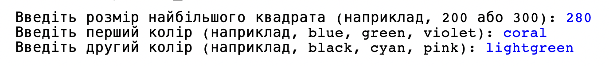
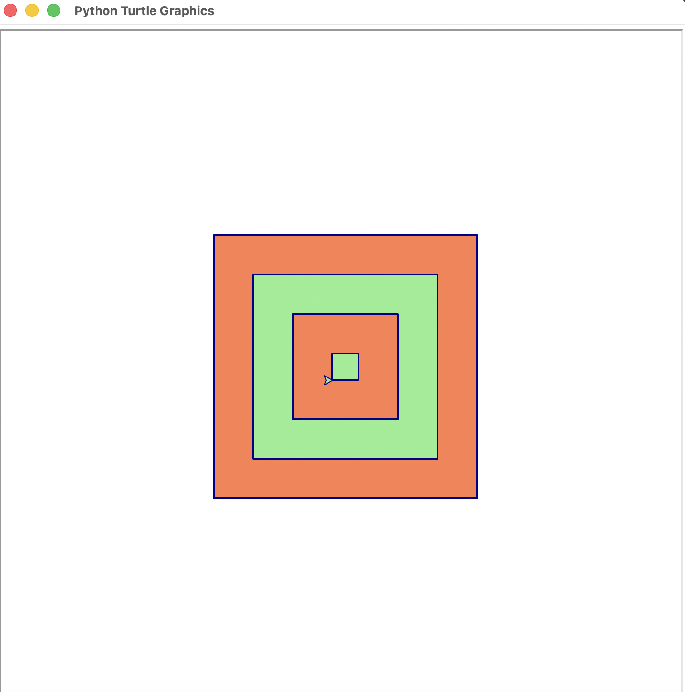
Це завдання об'єднує все, що ми вивчили: спілкування з користувачем (input), координати (goto), кольори, цикли for та математику.
- Запитай в користувача розмір квадрата та два кольори.
- Намалюй 4 квадрати, один всередині іншого, із чергуванням кольорів фону.
- Розмір кожного наступного квадрата має бути на 30% меншим за попередній.
- В результаті, всі квадрати мають бути розміщені рівно по центру вікна (підказка: починати малювати треба не з точки (0, 0)).